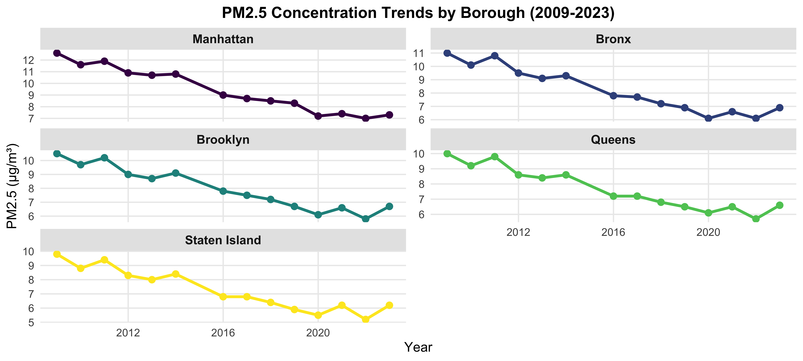
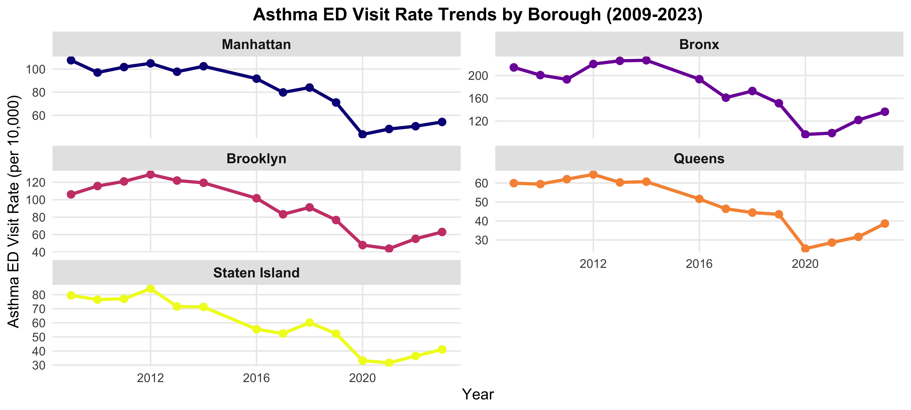
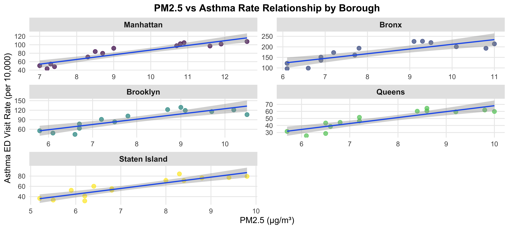
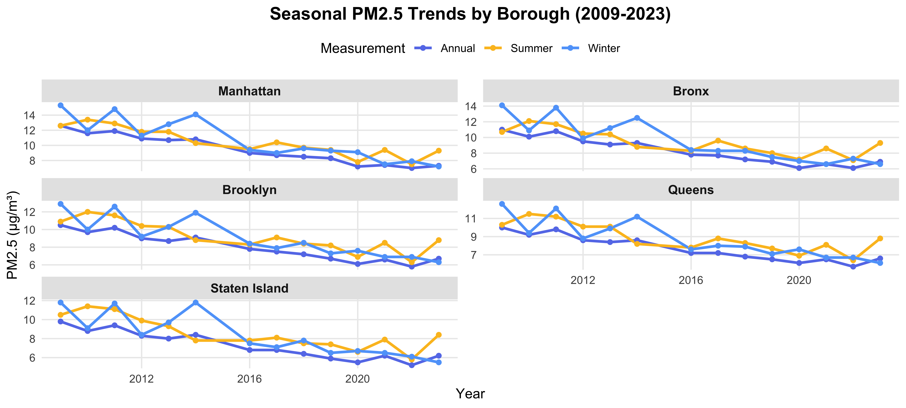

Exploratory Data Analysis
Air Pollution and Asthma in NYC (2009-2023)
Minseo Kim, Wenyu Lu, Jiaqi Zhu
Overview
This comprehensive exploratory data analysis examines the relationship between air pollution (PM2.5) and asthma emergency department visits across NYC’s five boroughs from 2009 to 2023.
Dataset Summary
summary_table <- tibble(
Metric = c("Time Period", "Boroughs", "Total Observations",
"PM2.5 Range (μg/m³)", "Asthma Rate Range (per 10,000)"),
Value = c(
"2009-2023 (14 years)",
"Manhattan, Bronx, Brooklyn, Queens, Staten Island",
nrow(pm25_asthma_clean),
sprintf("%.1f - %.1f", min(pm25_asthma_clean$pm25_annual, na.rm = TRUE),
max(pm25_asthma_clean$pm25_annual, na.rm = TRUE)),
sprintf("%.1f - %.1f", min(pm25_asthma_clean$asthma_rate, na.rm = TRUE),
max(pm25_asthma_clean$asthma_rate, na.rm = TRUE))
)
)
kable(summary_table, col.names = c("", ""), align = c("l", "l"))| Time Period | 2009-2023 (14 years) |
| Boroughs | Manhattan, Bronx, Brooklyn, Queens, Staten Island |
| Total Observations | 70 |
| PM2.5 Range (μg/m³) | 5.2 - 12.6 |
| Asthma Rate Range (per 10,000) | 25.4 - 226.8 |
Key Statistics by Borough
borough_summary <- pm25_asthma_clean %>%
group_by(borough) %>%
summarise(
`Mean PM2.5` = round(mean(pm25_annual, na.rm = TRUE), 1),
`Mean Asthma Rate` = round(mean(asthma_rate, na.rm = TRUE), 1),
`2023 PM2.5` = round(pm25_annual[year == 2023], 1),
`2023 Asthma` = round(asthma_rate[year == 2023], 1),
`PM2.5 Change` = round(pm25_annual[year == 2023] - pm25_annual[year == 2009], 1),
`Asthma Change` = round(asthma_rate[year == 2023] - asthma_rate[year == 2009], 1)
) %>%
arrange(desc(`Mean Asthma Rate`))
datatable(borough_summary,
options = list(pageLength = 5, dom = 't'),
rownames = FALSE) %>%
formatStyle('Mean Asthma Rate',
background = styleColorBar(borough_summary$`Mean Asthma Rate`, '#fecaca'),
backgroundSize = '100% 90%',
backgroundRepeat = 'no-repeat',
backgroundPosition = 'center')Time Series Analysis
PM2.5 Trends Over Time
p1 <- pm25_asthma_clean %>%
plot_ly(x = ~year, y = ~pm25_annual, color = ~borough,
type = 'scatter', mode = 'lines+markers',
colors = viridis(5),
hovertemplate = paste(
'<b>%{fullData.name}</b><br>',
'Year: %{x}<br>',
'PM2.5: %{y:.2f} μg/m³<br>',
'<extra></extra>'
)) %>%
layout(
title = list(text = "<b>Annual PM2.5 Concentrations by Borough (2009-2023)</b>", font = list(size = 16)),
xaxis = list(title = "Year", titlefont = list(size = 13), tickfont = list(size = 11)),
yaxis = list(title = "PM2.5 (μg/m³)", titlefont = list(size = 13), tickfont = list(size = 11)),
hovermode = 'closest',
legend = list(title = list(text = '<b>Borough</b>'), x = 1.02, y = 1, font = list(size = 10)),
margin = list(l = 60, r = 100, t = 60, b = 50),
autosize = TRUE
)
p1Key Finding: All five boroughs show consistent downward trends in PM2.5 concentrations, with Manhattan experiencing the steepest decline from 12.6 to 7.3 μg/m³ (42% reduction).
Asthma ED Visit Trends
p2 <- pm25_asthma_clean %>%
plot_ly(x = ~year, y = ~asthma_rate, color = ~borough,
type = 'scatter', mode = 'lines+markers',
colors = viridis(5, option = "plasma"),
hovertemplate = paste(
'<b>%{fullData.name}</b><br>',
'Year: %{x}<br>',
'ED Visit Rate: %{y:.1f} per 10,000<br>',
'<extra></extra>'
)) %>%
layout(
title = list(text = "<b>Asthma Emergency Department Visit Rates by Borough (2009-2023)</b>", font = list(size = 16)),
xaxis = list(title = "Year", titlefont = list(size = 13), tickfont = list(size = 11)),
yaxis = list(title = "ED Visit Rate (per 10,000)", titlefont = list(size = 13), tickfont = list(size = 11)),
hovermode = 'closest',
legend = list(title = list(text = '<b>Borough</b>'), x = 1.02, y = 1, font = list(size = 10)),
margin = list(l = 60, r = 100, t = 60, b = 50),
autosize = TRUE
)
p2Key Finding: The Bronx consistently shows asthma ED rates 2-4 times higher than other boroughs throughout the study period, highlighting persistent health disparities.
Borough Comparisons
Manhattan
manhattan_data <- pm25_asthma_clean %>% filter(borough == "Manhattan")
plot_ly(manhattan_data) %>%
add_trace(x = ~year, y = ~pm25_annual, type = 'scatter', mode = 'lines+markers',
name = 'PM2.5', yaxis = 'y',
line = list(color = '#f59e0b', width = 2.5), marker = list(size = 7)) %>%
add_trace(x = ~year, y = ~asthma_rate, type = 'scatter', mode = 'lines+markers',
name = 'Asthma Rate', yaxis = 'y2',
line = list(color = '#dc2626', width = 2.5), marker = list(size = 7)) %>%
layout(
title = list(text = "<b>Manhattan: PM2.5 vs Asthma ED Visits</b>", font = list(size = 15)),
xaxis = list(title = "Year", titlefont = list(size = 12)),
yaxis = list(title = "PM2.5 (μg/m³)", titlefont = list(size = 12, color = '#f59e0b'), tickfont = list(color = '#f59e0b')),
yaxis2 = list(title = "Asthma Rate (per 10,000)", titlefont = list(size = 12, color = '#dc2626'),
tickfont = list(color = '#dc2626'), overlaying = 'y', side = 'right'),
margin = list(l = 60, r = 60, t = 50, b = 40),
hovermode = 'x unified'
)Bronx
bronx_data <- pm25_asthma_clean %>% filter(borough == "Bronx")
plot_ly(bronx_data) %>%
add_trace(x = ~year, y = ~pm25_annual, type = 'scatter', mode = 'lines+markers',
name = 'PM2.5', yaxis = 'y',
line = list(color = '#f59e0b', width = 2.5), marker = list(size = 7)) %>%
add_trace(x = ~year, y = ~asthma_rate, type = 'scatter', mode = 'lines+markers',
name = 'Asthma Rate', yaxis = 'y2',
line = list(color = '#dc2626', width = 2.5), marker = list(size = 7)) %>%
layout(
title = list(text = "<b>Bronx: PM2.5 vs Asthma ED Visits</b>", font = list(size = 15)),
xaxis = list(title = "Year", titlefont = list(size = 12)),
yaxis = list(title = "PM2.5 (μg/m³)", titlefont = list(size = 12, color = '#f59e0b'), tickfont = list(color = '#f59e0b')),
yaxis2 = list(title = "Asthma Rate (per 10,000)", titlefont = list(size = 12, color = '#dc2626'),
tickfont = list(color = '#dc2626'), overlaying = 'y', side = 'right'),
margin = list(l = 60, r = 60, t = 50, b = 40),
hovermode = 'x unified'
)Brooklyn
brooklyn_data <- pm25_asthma_clean %>% filter(borough == "Brooklyn")
plot_ly(brooklyn_data) %>%
add_trace(x = ~year, y = ~pm25_annual, type = 'scatter', mode = 'lines+markers',
name = 'PM2.5', yaxis = 'y',
line = list(color = '#f59e0b', width = 2.5), marker = list(size = 7)) %>%
add_trace(x = ~year, y = ~asthma_rate, type = 'scatter', mode = 'lines+markers',
name = 'Asthma Rate', yaxis = 'y2',
line = list(color = '#dc2626', width = 2.5), marker = list(size = 7)) %>%
layout(
title = list(text = "<b>Brooklyn: PM2.5 vs Asthma ED Visits</b>", font = list(size = 15)),
xaxis = list(title = "Year", titlefont = list(size = 12)),
yaxis = list(title = "PM2.5 (μg/m³)", titlefont = list(size = 12, color = '#f59e0b'), tickfont = list(color = '#f59e0b')),
yaxis2 = list(title = "Asthma Rate (per 10,000)", titlefont = list(size = 12, color = '#dc2626'),
tickfont = list(color = '#dc2626'), overlaying = 'y', side = 'right'),
margin = list(l = 60, r = 60, t = 50, b = 40),
hovermode = 'x unified'
)Queens
queens_data <- pm25_asthma_clean %>% filter(borough == "Queens")
plot_ly(queens_data) %>%
add_trace(x = ~year, y = ~pm25_annual, type = 'scatter', mode = 'lines+markers',
name = 'PM2.5', yaxis = 'y',
line = list(color = '#f59e0b', width = 2.5), marker = list(size = 7)) %>%
add_trace(x = ~year, y = ~asthma_rate, type = 'scatter', mode = 'lines+markers',
name = 'Asthma Rate', yaxis = 'y2',
line = list(color = '#dc2626', width = 2.5), marker = list(size = 7)) %>%
layout(
title = list(text = "<b>Queens: PM2.5 vs Asthma ED Visits</b>", font = list(size = 15)),
xaxis = list(title = "Year", titlefont = list(size = 12)),
yaxis = list(title = "PM2.5 (μg/m³)", titlefont = list(size = 12, color = '#f59e0b'), tickfont = list(color = '#f59e0b')),
yaxis2 = list(title = "Asthma Rate (per 10,000)", titlefont = list(size = 12, color = '#dc2626'),
tickfont = list(color = '#dc2626'), overlaying = 'y', side = 'right'),
margin = list(l = 60, r = 60, t = 50, b = 40),
hovermode = 'x unified'
)Staten Island
staten_data <- pm25_asthma_clean %>% filter(borough == "Staten Island")
plot_ly(staten_data) %>%
add_trace(x = ~year, y = ~pm25_annual, type = 'scatter', mode = 'lines+markers',
name = 'PM2.5', yaxis = 'y',
line = list(color = '#f59e0b', width = 2.5), marker = list(size = 7)) %>%
add_trace(x = ~year, y = ~asthma_rate, type = 'scatter', mode = 'lines+markers',
name = 'Asthma Rate', yaxis = 'y2',
line = list(color = '#dc2626', width = 2.5), marker = list(size = 7)) %>%
layout(
title = list(text = "<b>Staten Island: PM2.5 vs Asthma ED Visits</b>", font = list(size = 15)),
xaxis = list(title = "Year", titlefont = list(size = 12)),
yaxis = list(title = "PM2.5 (μg/m³)", titlefont = list(size = 12, color = '#f59e0b'), tickfont = list(color = '#f59e0b')),
yaxis2 = list(title = "Asthma Rate (per 10,000)", titlefont = list(size = 12, color = '#dc2626'),
tickfont = list(color = '#dc2626'), overlaying = 'y', side = 'right'),
margin = list(l = 60, r = 60, t = 50, b = 40),
hovermode = 'x unified'
)Association Analysis
PM2.5 vs Asthma Rate Correlation
cor_by_borough <- pm25_asthma_clean %>%
group_by(borough) %>%
summarise(correlation = cor(pm25_annual, asthma_rate, use = "complete.obs"), .groups = 'drop')
plot_ly(pm25_asthma_clean, x = ~pm25_annual, y = ~asthma_rate,
color = ~borough, colors = viridis(5),
type = 'scatter', mode = 'markers',
marker = list(size = 8, opacity = 0.7),
text = ~paste('Year:', year, '<br>Borough:', borough,
'<br>PM2.5:', round(pm25_annual, 1),
'<br>Asthma Rate:', round(asthma_rate, 1)),
hoverinfo = 'text') %>%
layout(
title = list(text = "<b>PM2.5 vs Asthma ED Visit Rates</b>", font = list(size = 16)),
xaxis = list(title = "PM2.5 (μg/m³)", titlefont = list(size = 13)),
yaxis = list(title = "Asthma ED Visit Rate (per 10,000)", titlefont = list(size = 13)),
legend = list(title = list(text = '<b>Borough</b>'), font = list(size = 10)),
margin = list(l = 60, r = 80, t = 60, b = 50),
autosize = TRUE
)Correlation Summary
cor_table <- pm25_asthma_clean %>%
group_by(borough) %>%
summarise(
`Correlation (r)` = round(cor(pm25_annual, asthma_rate, use = "complete.obs"), 3),
`Mean PM2.5` = round(mean(pm25_annual, na.rm = TRUE), 1),
`Mean Asthma Rate` = round(mean(asthma_rate, na.rm = TRUE), 1),
.groups = 'drop'
) %>%
arrange(desc(`Correlation (r)`))
datatable(cor_table, options = list(pageLength = 5, dom = 't'), rownames = FALSE)Key Finding: Strong positive correlations (r > 0.7) between PM2.5 and asthma rates across all boroughs, with Brooklyn showing the strongest association (r = 0.82).
Borough Comparison
Geographic Patterns
PM2.5 Trends
ggplot(pm25_asthma_clean, aes(x = year, y = pm25_annual, color = borough)) +
geom_line(size = 1.2) +
geom_point(size = 2.5) +
facet_wrap(~ borough, ncol = 2, scales = "free_y") +
scale_color_viridis_d() +
labs(title = "PM2.5 Concentration Trends by Borough (2009-2023)",
x = "Year", y = "PM2.5 (μg/m³)") +
theme_minimal(base_size = 12) +
theme(
plot.title = element_text(face = "bold", size = 14, hjust = 0.5),
strip.text = element_text(face = "bold", size = 11),
strip.background = element_rect(fill = "gray90", color = NA),
legend.position = "none",
panel.grid.minor = element_blank()
)
Asthma Trends
ggplot(pm25_asthma_clean, aes(x = year, y = asthma_rate, color = borough)) +
geom_line(size = 1.2) +
geom_point(size = 2.5) +
facet_wrap(~ borough, ncol = 2, scales = "free_y") +
scale_color_viridis_d(option = "plasma") +
labs(title = "Asthma ED Visit Rate Trends by Borough (2009-2023)",
x = "Year", y = "Asthma ED Visit Rate (per 10,000)") +
theme_minimal(base_size = 12) +
theme(
plot.title = element_text(face = "bold", size = 14, hjust = 0.5),
strip.text = element_text(face = "bold", size = 11),
strip.background = element_rect(fill = "gray90", color = NA),
legend.position = "none",
panel.grid.minor = element_blank()
)
Association by Borough
ggplot(pm25_asthma_clean, aes(x = pm25_annual, y = asthma_rate)) +
geom_point(aes(color = borough), size = 2.5, alpha = 0.7) +
geom_smooth(method = "lm", se = TRUE, color = "#2563eb", size = 0.8) +
facet_wrap(~ borough, ncol = 2, scales = "free") +
scale_color_viridis_d() +
labs(title = "PM2.5 vs Asthma Rate Relationship by Borough",
x = "PM2.5 (μg/m³)", y = "Asthma ED Visit Rate (per 10,000)") +
theme_minimal(base_size = 12) +
theme(
plot.title = element_text(face = "bold", size = 14, hjust = 0.5),
strip.text = element_text(face = "bold", size = 11),
strip.background = element_rect(fill = "gray90", color = NA),
legend.position = "none",
panel.grid.minor = element_blank()
)
2023 Comparison
data_2023 <- pm25_asthma_clean %>% filter(year == 2023)
p_pm25 <- ggplot(data_2023, aes(x = reorder(borough, -pm25_annual), y = pm25_annual, fill = borough)) +
geom_col(alpha = 0.8) +
geom_text(aes(label = round(pm25_annual, 1)), vjust = -0.5, size = 4, fontface = "bold") +
scale_fill_viridis_d() +
labs(title = "PM2.5 Levels (2023)", x = NULL, y = "PM2.5 (μg/m³)") +
theme_minimal(base_size = 11) +
theme(plot.title = element_text(face = "bold", size = 12, hjust = 0.5),
legend.position = "none",
axis.text.x = element_text(angle = 45, hjust = 1)) +
ylim(0, max(data_2023$pm25_annual) * 1.15)
p_asthma <- ggplot(data_2023, aes(x = reorder(borough, -asthma_rate), y = asthma_rate, fill = borough)) +
geom_col(alpha = 0.8) +
geom_text(aes(label = round(asthma_rate, 1)), vjust = -0.5, size = 4, fontface = "bold") +
scale_fill_viridis_d(option = "plasma") +
labs(title = "Asthma ED Rates (2023)", x = NULL, y = "Asthma Rate (per 10,000)") +
theme_minimal(base_size = 11) +
theme(plot.title = element_text(face = "bold", size = 12, hjust = 0.5),
legend.position = "none",
axis.text.x = element_text(angle = 45, hjust = 1)) +
ylim(0, max(data_2023$asthma_rate) * 1.15)
p_pm25 + p_asthma
Seasonal Patterns
Summer vs Winter
seasonal_long <- pm25_asthma_clean %>%
select(borough, year, pm25_summer, pm25_winter) %>%
pivot_longer(cols = c(pm25_summer, pm25_winter), names_to = "season", values_to = "pm25") %>%
mutate(season = ifelse(season == "pm25_summer", "Summer", "Winter"))
ggplot(seasonal_long, aes(x = borough, y = pm25, fill = season)) +
geom_boxplot(alpha = 0.8, outlier.shape = 21, outlier.size = 1.5) +
scale_fill_manual(values = c("Summer" = "#fbbf24", "Winter" = "#60a5fa")) +
labs(title = "Seasonal PM2.5 Distribution by Borough (2009-2023)",
x = "Borough", y = "PM2.5 (μg/m³)", fill = "Season") +
theme_minimal(base_size = 12) +
theme(
plot.title = element_text(face = "bold", size = 14, hjust = 0.5),
legend.position = "top",
legend.title = element_text(face = "bold"),
axis.text.x = element_text(angle = 45, hjust = 1),
panel.grid.minor = element_blank()
)
Seasonal Trends Over Time
ggplot(df_long, aes(x = year, y = pm25_value, color = pm25_type, group = pm25_type)) +
geom_line(size = 1) +
geom_point(size = 1.5) +
facet_wrap(~ borough, ncol = 2, scales = "free_y") +
scale_color_manual(values = c("Annual" = "#667eea", "Summer" = "#fbbf24", "Winter" = "#60a5fa")) +
labs(title = "Seasonal PM2.5 Trends by Borough (2009-2023)",
x = "Year", y = "PM2.5 (μg/m³)", color = "Measurement") +
theme_minimal(base_size = 11) +
theme(
plot.title = element_text(face = "bold", size = 14, hjust = 0.5),
strip.text = element_text(face = "bold", size = 10),
strip.background = element_rect(fill = "gray90", color = NA),
legend.position = "top",
panel.grid.minor = element_blank()
)
Key Finding: Historical winter peaks in PM2.5 have diminished over time, with summer and winter levels now converging in most boroughs.
Heatmap Analysis
Interactive Heatmaps
Annual PM2.5
heatmap_data_pm25 <- pm25_asthma_clean %>%
select(year, borough, pm25_annual) %>%
pivot_wider(names_from = borough, values_from = pm25_annual) %>%
column_to_rownames("year")
plot_ly(
x = colnames(heatmap_data_pm25),
y = rownames(heatmap_data_pm25),
z = as.matrix(heatmap_data_pm25),
type = "heatmap",
colors = colorRamp(c("#ffffcc", "#ffeda0", "#fed976", "#feb24c", "#fd8d3c", "#fc4e2a", "#e31a1c", "#bd0026", "#800026")),
hovertemplate = 'Borough: %{x}<br>Year: %{y}<br>PM2.5: %{z:.1f} μg/m³<extra></extra>'
) %>%
layout(
title = list(text = "<b>Annual PM2.5 Concentrations (2009-2023)</b>", font = list(size = 15)),
xaxis = list(title = "Borough", titlefont = list(size = 12)),
yaxis = list(title = "Year", titlefont = list(size = 12)),
margin = list(l = 60, r = 80, t = 60, b = 60)
)Asthma Rate
heatmap_data_asthma <- pm25_asthma_clean %>%
select(year, borough, asthma_rate) %>%
pivot_wider(names_from = borough, values_from = asthma_rate) %>%
column_to_rownames("year")
plot_ly(
x = colnames(heatmap_data_asthma),
y = rownames(heatmap_data_asthma),
z = as.matrix(heatmap_data_asthma),
type = "heatmap",
colors = colorRamp(c("#fff5f0", "#fee0d2", "#fcbba1", "#fc9272", "#fb6a4a", "#ef3b2c", "#cb181d", "#a50f15", "#67000d")),
hovertemplate = 'Borough: %{x}<br>Year: %{y}<br>Asthma Rate: %{z:.1f} per 10,000<extra></extra>'
) %>%
layout(
title = list(text = "<b>Asthma ED Visit Rates (2009-2023)</b>", font = list(size = 15)),
xaxis = list(title = "Borough", titlefont = list(size = 12)),
yaxis = list(title = "Year", titlefont = list(size = 12)),
margin = list(l = 60, r = 80, t = 60, b = 60)
)Summer PM2.5
heatmap_data_summer <- pm25_asthma_clean %>%
select(year, borough, pm25_summer) %>%
pivot_wider(names_from = borough, values_from = pm25_summer) %>%
column_to_rownames("year")
plot_ly(
x = colnames(heatmap_data_summer),
y = rownames(heatmap_data_summer),
z = as.matrix(heatmap_data_summer),
type = "heatmap",
colors = colorRamp(c("#ffffcc", "#ffeda0", "#fed976", "#feb24c", "#fd8d3c")),
hovertemplate = 'Borough: %{x}<br>Year: %{y}<br>Summer PM2.5: %{z:.1f} μg/m³<extra></extra>'
) %>%
layout(
title = list(text = "<b>Summer PM2.5 Concentrations (2009-2023)</b>", font = list(size = 15)),
xaxis = list(title = "Borough", titlefont = list(size = 12)),
yaxis = list(title = "Year", titlefont = list(size = 12)),
margin = list(l = 60, r = 80, t = 60, b = 60)
)Winter PM2.5
heatmap_data_winter <- pm25_asthma_clean %>%
select(year, borough, pm25_winter) %>%
pivot_wider(names_from = borough, values_from = pm25_winter) %>%
column_to_rownames("year")
plot_ly(
x = colnames(heatmap_data_winter),
y = rownames(heatmap_data_winter),
z = as.matrix(heatmap_data_winter),
type = "heatmap",
colors = colorRamp(c("#f7fbff", "#deebf7", "#c6dbef", "#9ecae1", "#6baed6", "#4292c6", "#2171b5", "#08519c", "#08306b")),
hovertemplate = 'Borough: %{x}<br>Year: %{y}<br>Winter PM2.5: %{z:.1f} μg/m³<extra></extra>'
) %>%
layout(
title = list(text = "<b>Winter PM2.5 Concentrations (2009-2023)</b>", font = list(size = 15)),
xaxis = list(title = "Borough", titlefont = list(size = 12)),
yaxis = list(title = "Year", titlefont = list(size = 12)),
margin = list(l = 60, r = 80, t = 60, b = 60)
)Seasonal Difference
heatmap_data_diff <- pm25_asthma_clean %>%
select(year, borough, pm25_diff) %>%
pivot_wider(names_from = borough, values_from = pm25_diff) %>%
column_to_rownames("year")
plot_ly(
x = colnames(heatmap_data_diff),
y = rownames(heatmap_data_diff),
z = as.matrix(heatmap_data_diff),
type = "heatmap",
colors = colorRamp(c("#0571b0", "#92c5de", "#f7f7f7", "#f4a582", "#ca0020")),
hovertemplate = 'Borough: %{x}<br>Year: %{y}<br>Difference: %{z:.1f} μg/m³<extra></extra>'
) %>%
layout(
title = list(text = "<b>Seasonal Difference (Winter - Summer) PM2.5</b>", font = list(size = 15)),
xaxis = list(title = "Borough", titlefont = list(size = 12)),
yaxis = list(title = "Year", titlefont = list(size = 12)),
margin = list(l = 60, r = 80, t = 60, b = 60)
)Key Findings & Conclusions
Major Findings
Conclusions
Air Quality Progress: All five NYC boroughs demonstrated substantial reductions in PM2.5 concentrations between 2009 and 2023, with Manhattan showing the most dramatic improvement.
Persistent Health Disparities: Despite overall improvements, the Bronx continues to experience asthma ED visit rates 2-4 times higher than other boroughs, indicating environmental health inequities requiring targeted intervention.
Strong PM2.5-Asthma Correlation: Positive associations between PM2.5 levels and asthma ED visits were observed across all boroughs, supporting the causal relationship between air pollution and respiratory health outcomes.
Changing Seasonal Patterns: Historical winter peaks in PM2.5 have diminished in recent years, with summer concentrations becoming relatively more prominent.
Geographic Variations: Significant borough-level differences in both PM2.5 concentrations and asthma rates suggest that local factors play important roles beyond citywide air quality trends.
Public Health Implications
- Targeted Interventions: The Bronx requires focused public health interventions to address disproportionate asthma burdens
- Continued Monitoring: Despite improvements, PM2.5 levels still impact respiratory health outcomes
- Policy Success: Declining PM2.5 trends suggest that air quality policies have been effective
- Environmental Justice: Persistent disparities highlight the need for equitable environmental health policies